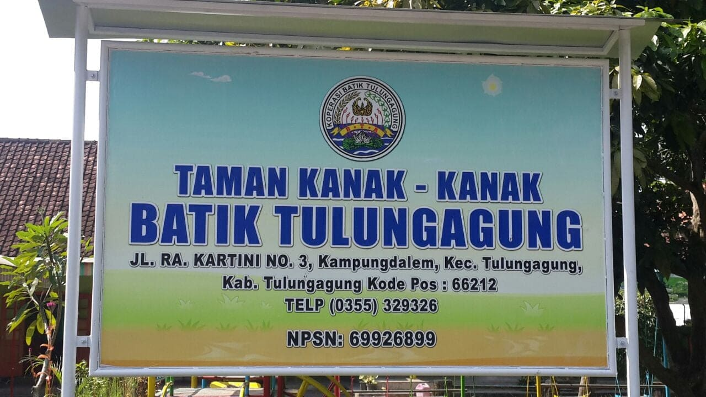
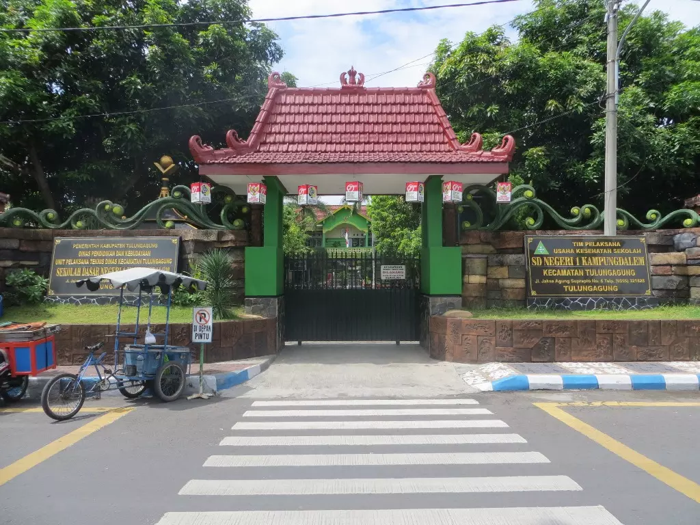
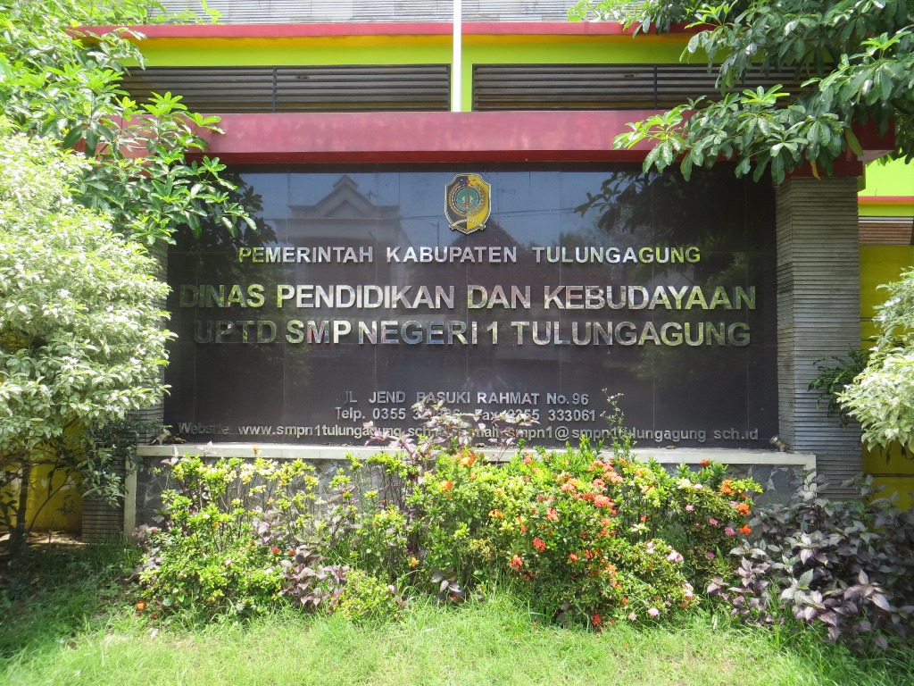
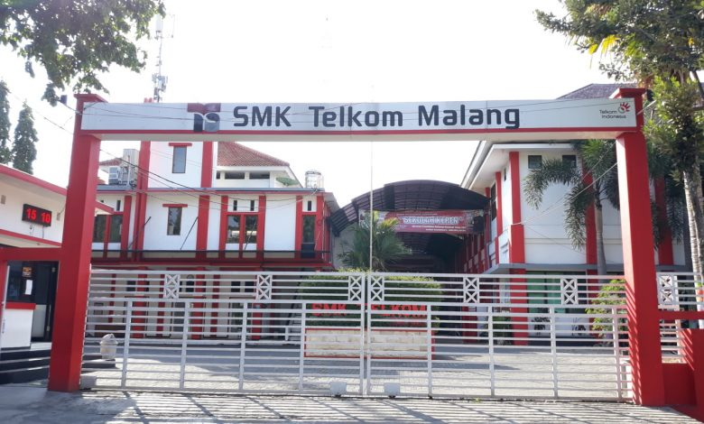

Perkenalan
Pada page pendidikan saya ingin menampilkan dan sedikit mendeskripsikan tentang pendidikan yang saya tempuh ± 12 tahun, mari kita mulai..
TK
Awal pendidikan untuk mengenal teman dan bermain bersama sama ya disini!! di Taman Kanak-kanak yang bernama TK Batik Tulungagung, mulai disini aku mengenal apa artinya pertemanan dan juga merasakan kehangatan kasih sayang para guru pengajar yang ada disana.
SD
Saat saya berumur 7 tahun, saya masuk SDN 1 Kampungdalem. Saya di SD mendapat pelajaran yang sangat mengagumkan dan saya bisa meraih banyak prestasi melalui ekstrakurikuler sekolah, dari akademis maupun non-akademis.
SMP
Setelah saya lulus dari SD saya melanjutkan pendidikan jenjang SMP, dan SMP saya berada di SMPN 1 Tulungagung. Sekolah terbaik di Tulungagung dengan nilai-nilai nya di dalam bidang pelajaran.
SMA/SMK
Setelah 3 tahun menempuh pendidikan di tingkat SMP, saya bercita-cita bersekolah di SMK Telkom malang, alhamdulillah saya mengikuti tes gelombang pertama lolos. Sekarang saya menempuh pendidikan di SMK Telkom Malang, saya memilih jurusan RPL dan peminatan Laravel-VueJs (Web Developer).